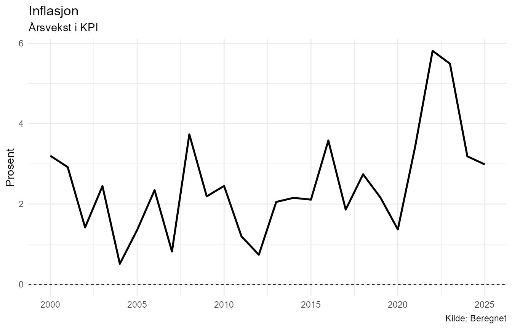
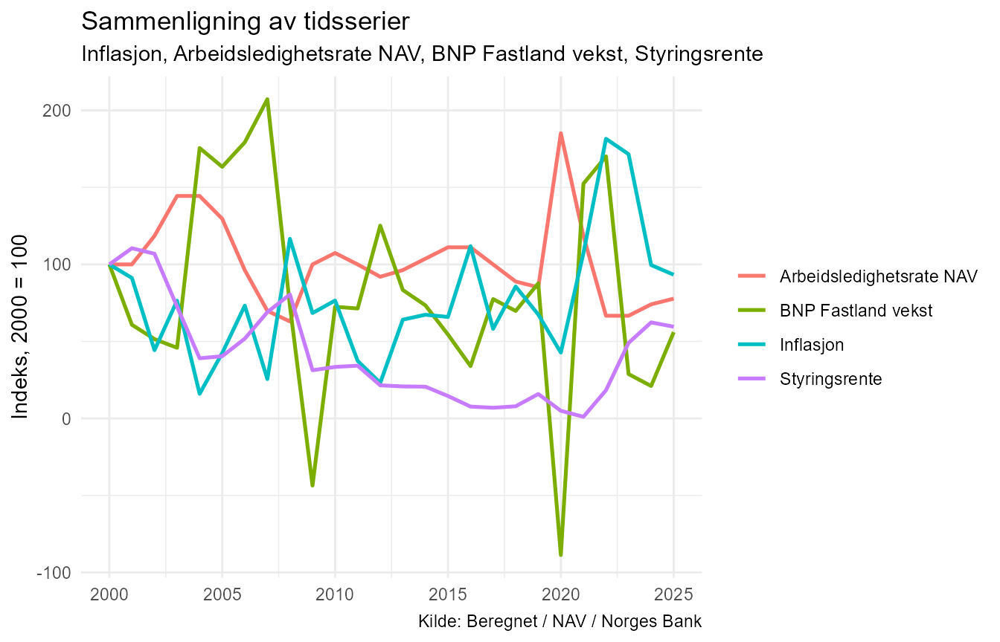

NorMacro
NorMacro er en R-pakke for innhenting, organisering og analyse av norske makroøkonomiske data.
Pakken samler økonomiske tidsserier fra flere kilder i et felles format og knytter dataene til metadata som beskriver blant annet kilde, enhet, kategori og analysetype.
Denne vignetten viser en grunnleggende arbeidsflyt med NorMacro. Eksemplene bruker et lite, statisk datasett som følger med pakken. Det gjør at vignetten kan kjøres uten å hente data fra eksterne API-er.
Eksempeldata
NorMacro inneholder eksempeldatasettet normacro_example.
Det består av et utvalg norske makroøkonomiske årsserier for perioden
2000–2025.
names(normacro_example)
#> [1] "Aar" "KPI"
#> [3] "Inflasjon" "Befolkning"
#> [5] "Arbeidsstyrke" "Sysselsatte"
#> [7] "Arbeidsledige_NAV" "Arbeidsledighetsrate_NAV"
#> [9] "Styringsrente" "BNP_Fastland"
#> [11] "BNP_Fastland_vekst" "Lonnvekst"
#> [13] "Boligprisindeks" "Boligprisvekst"
#> [15] "Oljepris_USD" "Eksport"
#> [17] "Import"Datasettet inneholder både nivåserier, vekstrater og indekser fra flere deler av norsk økonomi.
De tilhørende metadataene finnes i
normacro_example_metadata.
normacro_example_metadata[
c(
"Variabel",
"Display_navn",
"Kategori",
"Enhet",
"Analyse_type"
)
]
#> # A tibble: 16 × 5
#> Variabel Display_navn Kategori Enhet Analyse_type
#> <chr> <chr> <chr> <chr> <chr>
#> 1 KPI KPI Priser … 2025… indeks
#> 2 Inflasjon Inflasjon Priser … Pros… rate
#> 3 Befolkning Befolkning Demogra… Pers… nivå
#> 4 Arbeidsstyrke Arbeidsstyrke Arbeids… Pers… nivå
#> 5 Sysselsatte Sysselsatte Arbeids… Pers… nivå
#> 6 Arbeidsledige_NAV Arbeidsledige NAV Arbeids… Pers… nivå
#> 7 Arbeidsledighetsrate_NAV Arbeidsledighetsrate NAV Arbeids… Pros… rate
#> 8 Styringsrente Styringsrente Finansm… Pros… rate
#> 9 BNP_Fastland BNP Fastland Nasjona… Mill… nivå
#> 10 BNP_Fastland_vekst BNP Fastland vekst Nasjona… Pros… rate
#> 11 Lonnvekst Lonnvekst Lønn og… Pros… rate
#> 12 Boligprisindeks Boligprisindeks Boligma… Inde… indeks
#> 13 Boligprisvekst Boligprisvekst Boligma… Pros… rate
#> 14 Oljepris_USD Oljepris USD Energi … USD … nivå
#> 15 Eksport Eksport Utenrik… Mill… nivå
#> 16 Import Import Utenrik… Mill… nivåDatadekning
coverage() gir en samlet oversikt over hvilke perioder
variablene dekker, antall observasjoner og eventuell manglende data.
coverage(normacro_example)
#> # A tibble: 16 × 11
#> Variabel Startaar_data Sluttaar_data Antall_observasjoner Antall_mangler
#> <chr> <dbl> <dbl> <int> <int>
#> 1 Arbeidsledig… 2000 2025 26 0
#> 2 Arbeidsledig… 2000 2025 26 0
#> 3 Arbeidsstyrke 2000 2025 26 0
#> 4 Sysselsatte 2000 2025 26 0
#> 5 Boligprisind… 2000 2025 26 0
#> 6 Boligprisvek… 2000 2025 26 0
#> 7 Befolkning 2000 2025 26 0
#> 8 Oljepris_USD 2000 2025 26 0
#> 9 Styringsrente 2000 2025 26 0
#> 10 Lonnvekst 2000 2025 26 0
#> 11 BNP_Fastland 2000 2025 26 0
#> 12 BNP_Fastland… 2000 2025 26 0
#> 13 Inflasjon 2000 2025 26 0
#> 14 KPI 2000 2025 26 0
#> 15 Eksport 2000 2025 26 0
#> 16 Import 2000 2025 26 0
#> # ℹ 6 more variables: Display_navn <chr>, Kategori <chr>, Type <chr>,
#> # Beskrivelse <chr>, Enhet <chr>, Analyse_type <chr>For eksempeldatasettet har alle seriene observasjoner for hele perioden 2000–2025.
Med det fullstendige NorMacro-datasettet vil startår og datadekning variere mellom seriene.
Undersøk én variabel
variable_summary() samler sentral informasjon om én
variabel.
Her undersøker vi norsk inflasjon:
variable_summary(
"Inflasjon",
data = normacro_example
)
#>
#> Variabel
#> --------
#> Inflasjon
#> (Inflasjon)
#>
#> Beskrivelse
#> -----------
#> Årsvekst i KPI
#>
#> Metadata
#> --------
#> Kategori: Priser og inflasjon
#> Type: Beregnet
#> Kilde: Beregnet
#> Enhet: Prosent
#> Frekvens: Årlig
#> Analysetype: rate
#>
#> Dekning
#> -------
#> 2000-2025
#> Observasjoner: 26
#>
#> Siste observasjon
#> -----------------
#> År: 2025
#> Verdi: 2.986612
#>
#> Oppsummering
#> ------------
#> # A tibble: 1 × 8
#> Display_navn Siste_aar Siste_verdi Gjennomsnitt Median Minimum Maksimum
#> <chr> <dbl> <dbl> <dbl> <dbl> <dbl> <dbl>
#> 1 Inflasjon 2025 2.99 2.47 2.27 0.512 5.81
#> # ℹ 1 more variable: Standardavvik <dbl>
#>
#> Sterkeste korrelasjoner
#> -----------------------
#> # A tibble: 5 × 3
#> Display_navn Variabel Korrelasjon
#> <chr> <chr> <dbl>
#> 1 Eksport Eksport 0.545
#> 2 KPI KPI 0.518
#> 3 Sysselsatte Sysselsatte 0.491
#> 4 Arbeidsledighetsrate NAV Arbeidsledighetsrate_NAV -0.485
#> 5 Arbeidsstyrke Arbeidsstyrke 0.477Resultatet kombinerer metadata og dataanalyse. Det viser blant annet beskrivelse, kilde, måleenhet, datadekning, siste observasjon, deskriptiv statistikk og de sterkeste korrelasjonene med andre variabler i datasettet.
Plotting av en tidsserie
plot_series() lager en tidsseriefigur med informasjon
fra NorMacro-metadataene brukt til blant annet tittel og
aksemerking.
plot_series(
"Inflasjon",
data = normacro_example
)
Figuren viser hvordan inflasjonen har variert gjennom perioden.
Sammenlign flere serier
Makroøkonomiske variabler har ofte forskjellige måleenheter og
størrelsesnivåer. compare_series() kan derfor normalisere
serier slik at utviklingen kan sammenlignes på en felles skala.
compare_series(
c(
"Inflasjon",
"Arbeidsledighetsrate_NAV",
"BNP_Fastland_vekst",
"Styringsrente"
),
data = normacro_example
)
Standardinnstillingen er normalize = TRUE. Det gjør
figuren egnet til å sammenligne utviklingsmønstre selv om de
opprinnelige seriene måles på ulike skalaer.
Korrelasjon mellom variabler
correlate_series() beregner parvise korrelasjoner mellom
valgte tidsserier.
correlate_series(
c(
"Inflasjon",
"Arbeidsledighetsrate_NAV",
"BNP_Fastland_vekst",
"Styringsrente"
),
data = normacro_example
)
#> # A tibble: 6 × 11
#> Variabel_x Display_x Variabel_y Display_y Korrelasjon P_verdi
#> <chr> <chr> <chr> <chr> <chr> <chr>
#> 1 Inflasjon Inflasjon Arbeidsle… Arbeidsl… -0,485 0,012
#> 2 Arbeidsledighetsrate_NAV Arbeidsledi… BNP_Fastl… BNP Fast… -0,275 0,173
#> 3 Arbeidsledighetsrate_NAV Arbeidsledi… Styringsr… Styrings… -0,176 0,389
#> 4 Inflasjon Inflasjon BNP_Fastl… BNP Fast… -0,094 0,647
#> 5 BNP_Fastland_vekst BNP Fastlan… Styringsr… Styrings… 0,054 0,793
#> 6 Inflasjon Inflasjon Styringsr… Styrings… 0,036 0,861
#> # ℹ 5 more variables: Antall_observasjoner <int>, Metode <chr>, Startaar <dbl>,
#> # Sluttaar <dbl>, Signifikant <chr>Tabellen viser korrelasjonskoeffisient, p-verdi, antall observasjoner og perioden som inngår i beregningen.
Korrelasjon beskriver statistisk samvariasjon mellom serier. Den innebærer ikke i seg selv en kausal sammenheng.
Vekst over flere perioder
For nivåserier kan growth_table() brukes til å
sammenligne utviklingen over flere tidshorisonter.
growth_table(
c(
"Befolkning",
"Arbeidsstyrke",
"Sysselsatte"
),
data = normacro_example
)
#> # A tibble: 3 × 9
#> Display_navn Siste_aar Siste_verdi Vekst_1aar CAGR_1aar Vekst_5aar CAGR_5aar
#> <chr> <dbl> <dbl> <dbl> <dbl> <dbl> <dbl>
#> 1 Befolkning 2025 5594340 0.795 0.795 4.22 0.831
#> 2 Arbeidsstyrke 2025 3039000 0.997 0.997 6.97 1.36
#> 3 Sysselsatte 2025 2903000 0.485 0.485 7.12 1.39
#> # ℹ 2 more variables: Vekst_10aar <dbl>, CAGR_10aar <dbl>Tabellen viser siste observasjon samt samlet vekst og gjennomsnittlig årlig vekst (CAGR) over ett, fem og ti år.
Siste tilgjengelige observasjoner
latest_observations() gir en kompakt oversikt over den
siste observasjonen for hver variabel.
latest_observations(
data = normacro_example
)
#> # A tibble: 16 × 10
#> Siste_aar Variabel Siste_verdi Display_navn Kategori Type Beskrivelse Enhet
#> <dbl> <chr> <dbl> <chr> <chr> <chr> <chr> <chr>
#> 1 2025 Arbeidsl… 63036 Arbeidsledi… Arbeids… Orig… Registrert… Pers…
#> 2 2025 Arbeidsl… 2.1 Arbeidsledi… Arbeids… Orig… Registrert… Pros…
#> 3 2025 Arbeidss… 3039000 Arbeidsstyr… Arbeids… Orig… Personer i… Pers…
#> 4 2025 Sysselsa… 2903000 Sysselsatte Arbeids… Orig… Sysselsatt… Pers…
#> 5 2025 Boligpri… 152. Boligprisin… Boligma… Orig… Prisindeks… Inde…
#> 6 2025 Boligpri… 5.46 Boligprisve… Boligma… Bere… Årlig pros… Pros…
#> 7 2025 Befolkni… 5594340 Befolkning Demogra… Orig… Befolkning… Pers…
#> 8 2025 Oljepris… 69.1 Oljepris USD Energi … Orig… Brent Blen… USD …
#> 9 2025 Styrings… 4.30 Styringsren… Finansm… Orig… Norges Ban… Pros…
#> 10 2025 Lonnvekst 4.9 Lonnvekst Lønn og… Orig… Årslønn, p… Pros…
#> 11 2025 BNP_Fast… 4117384 BNP Fastland Nasjona… Orig… BNP Fastla… Mill…
#> 12 2025 BNP_Fast… 1.72 BNP Fastlan… Nasjona… Bere… Årsvekst i… Pros…
#> 13 2025 Inflasjon 2.99 Inflasjon Priser … Bere… Årsvekst i… Pros…
#> 14 2025 KPI 100 KPI Priser … Orig… Konsumpris… 2025…
#> 15 2025 Eksport 2673535 Eksport Utenrik… Orig… Eksport i … Mill…
#> 16 2025 Import 1770968 Import Utenrik… Orig… Import i a… Mill…
#> # ℹ 2 more variables: Kilde <chr>, Analyse_type <chr>Resultatet kombinerer siste verdi med sentrale metadata, blant annet kategori, beskrivelse, enhet, kilde og analysetype.
Arbeid med det fullstendige datasettet
Eksempeldatasettet er laget for dokumentasjon og reproducerbare
eksempler. Ved vanlig bruk kan det fullstendige norske makrodatasettet
hentes med get_normacro():
macro <- get_normacro()Funksjonene i denne vignetten kan deretter brukes på samme måte:
coverage(macro)
variable_summary(
"Inflasjon",
data = macro
)
plot_series(
"Inflasjon",
data = macro
)Det fullstendige datasettet inneholder flere variabler og lengre historiske tidsserier enn eksempeldatasettet.
NorMacro inneholder også funksjonalitet for internasjonale sammenligninger, konjunkturanalyse og norske kommune- og fylkesdata fra KOSTRA. Disse delene behandles separat fra den grunnleggende arbeidsflyten som er vist her.